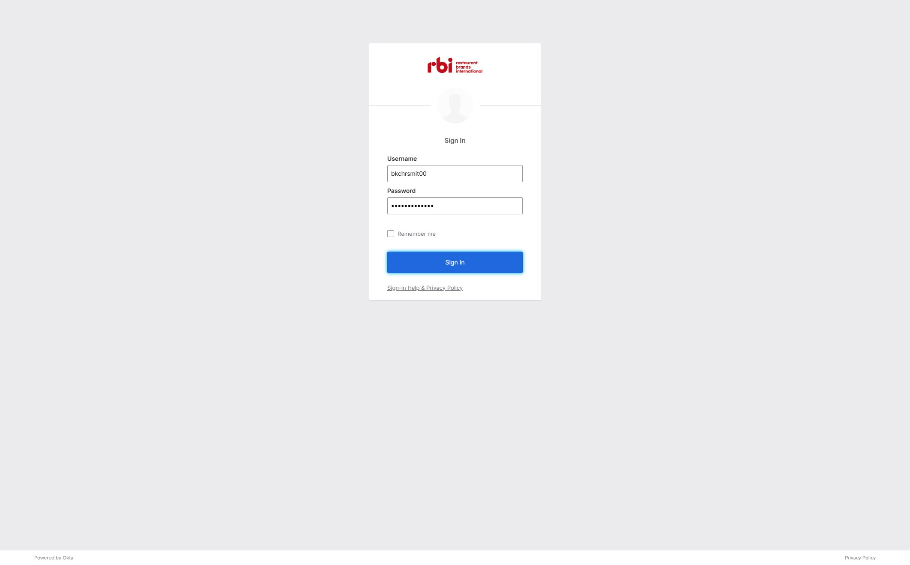
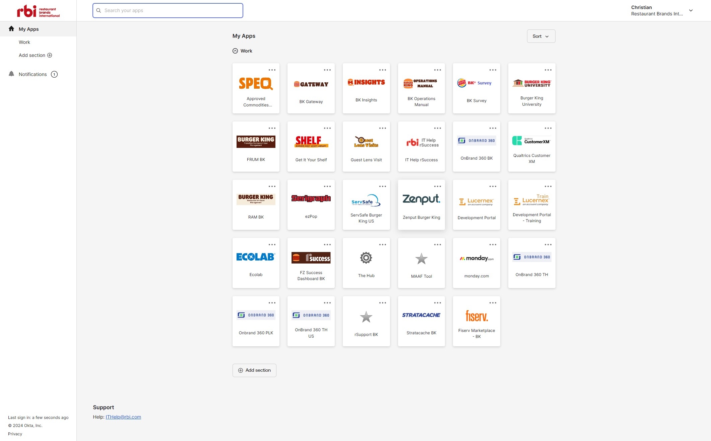
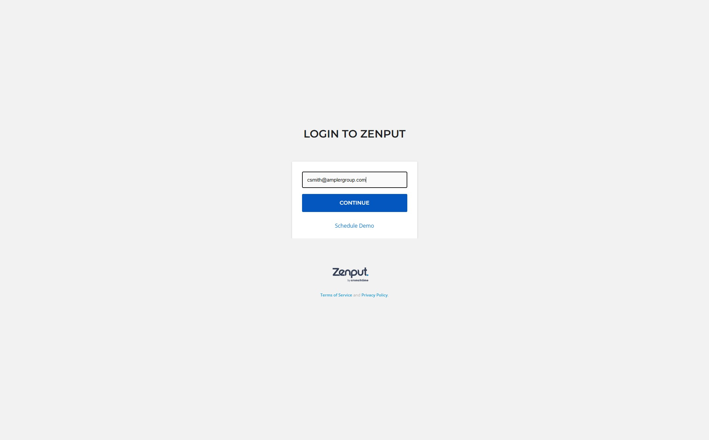
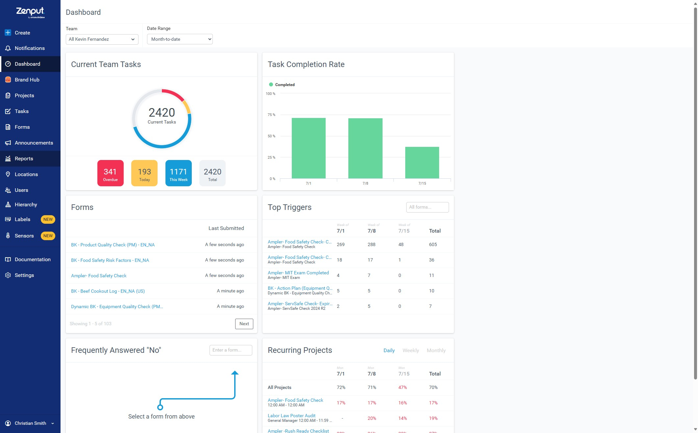
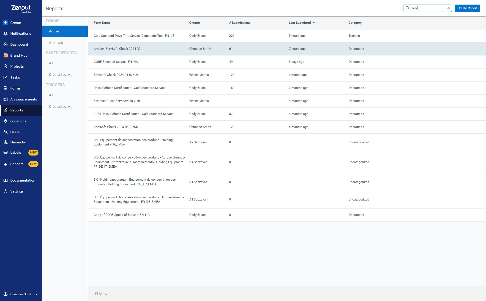
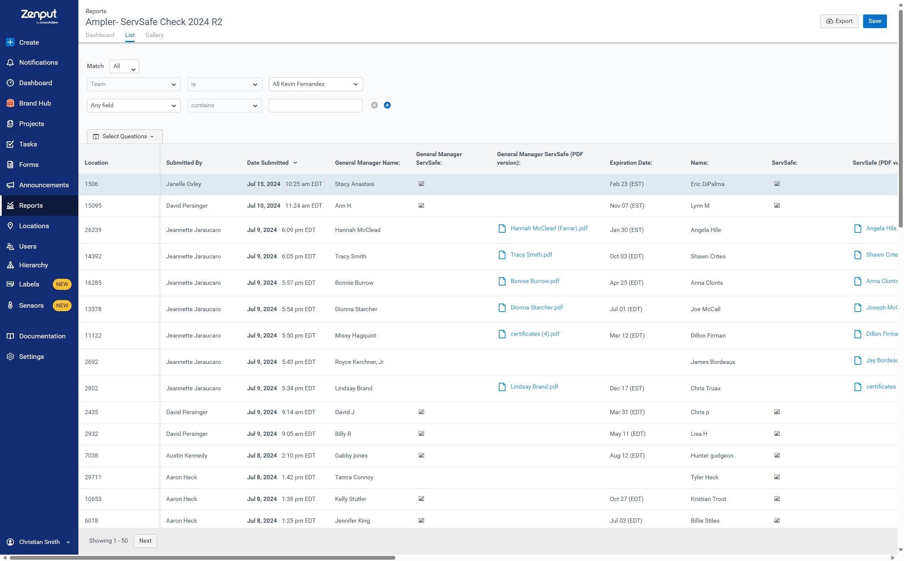
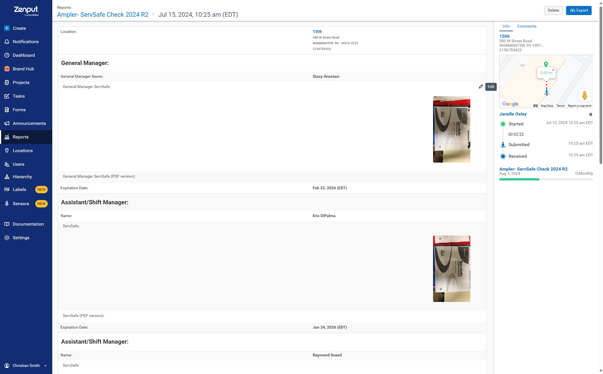
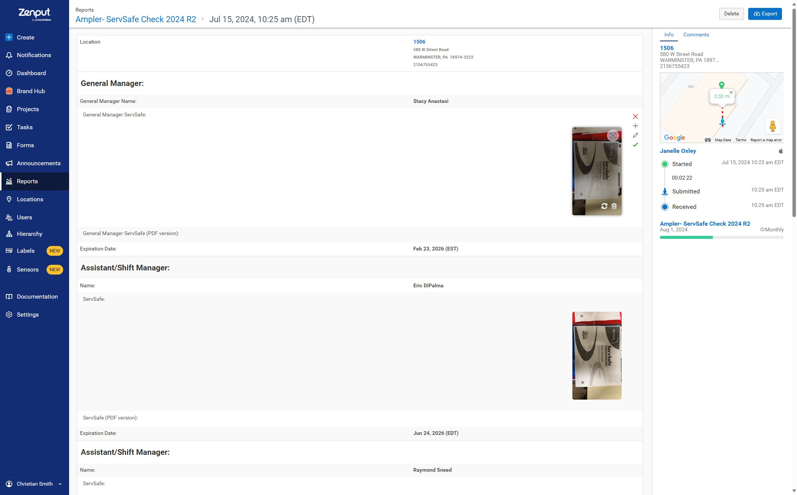
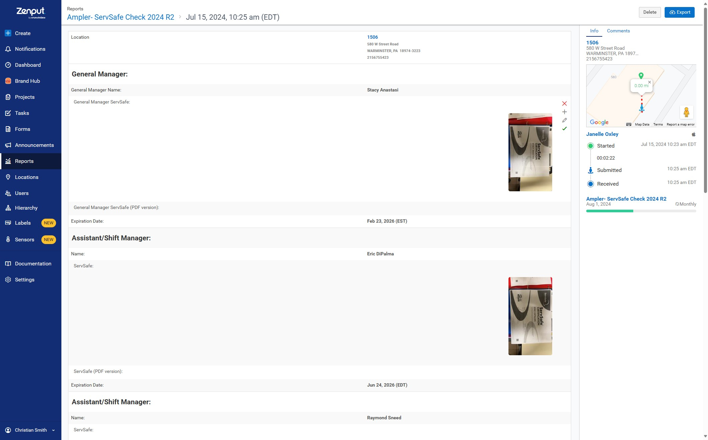

-
Warning
This can only be done if the Form Admin gave permissions to adjust submissions. ServSafe Check has these permissions available to adjust your own submissions.
-
1Navigate to https://rbi.okta.com/login/login.htm
-
2Click this button.

-
3Click "Zenput Burger King"

-
4Click "CONTINUE"

-
5Click "Reports"

-
6Click on whichever Form you are adjusting the submission for.

-
7Click the submission you need to adjust.

-
8Click the pencil on whichever option(s) you need to adjust.

-
9Adjust.

-
10Click the check once completed.
